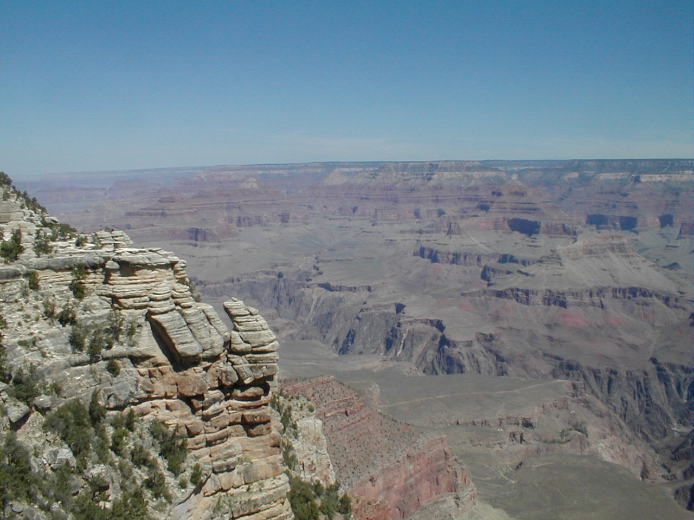

Day 8: May 20, Flagstaff, AZPrevious Day - Home - Next Day Photo of the DayThe Grand Canyon. Keegan's LogDay 8: May 20, Flagstaff, AZ Mileage: Rest DayWeather: Mid 80s, Sunny Today was our first rest day, a chance to relax and recuperate from the past 500 miles of riding. Flagstaff is only about 80 miles south of the Grand Canyon, so we decided yesterday to rent a car with a few other people and make the trek up to see The Hole. Dad picked up the car this morning, and we left from the hotel with Chuck, Karen and Chris for the trip north. It took about an hour and a half to reach the canyon, we got out at the first stop for a look around, the canyon truly was magnificent. I had seen it from the air on the trip out to LA last week, but you can't appreciate the scale until you stand at the edge. It's about 10 miles across and a mile deep, and stretches almost 300 miles end to end. Luckily for us today was a beautiful sunny day, making for some great pictures (and lots of other tourists). We went to a few other lookouts to get a slightly different perspective each time, then headed to a deli in the park for some lunch. We headed back to the hotel in the afternoon, Karen and Chuck were dropped off before dad, Chris, and I continued on to visit the Lowell Observatory. Back in the late 1800s, the mathematician/astronomer Percival Lowell calculated the position of an undiscovered Planet X, and the well-off scientist set up the observatory above Flagstaff to search for the missing planet. The observatory did indeed find Pluto, but not until 1930, 14 years after Lowell had died. The observatory and the tour were interesting, the main telescope was a 30 foot long behemoth, largely unchanged since 1894. After the observatory tour, dad and I returned to clean and lube our bikes, a good idea after riding in the rain. I had a mysterious 'night flat', a tire which appears to go flat for no reason while the bike is just sitting. After replacing the tire, cleaning the mud off the bike, and oiling the moving parts (the bike thanked me), dad and I headed off to get some dinner at Fazoli's and return the rental car. Tonight it's off to bed early, tomorrow is a 95 mile day to Holbrook. Phil's LogDay 8: Flagstaff, Arizona Today was an off day, and I never sat on my bicycle seat. Instead, I rented a car and Chuck & Karen, and Chris from Australia, and Keegan and I went to the Grand Canyon. Words cannot describe the canyon and I won't attempt to do so. But I did learn at an interpretative center the name of the big aspragus-like plant. Agave, or Century Plant, it lives a long life cycle looking a lot like aloe. But at the end of its life it shoots up this long stalk, growing nearly a foot a day. This then flowers and showers teh area with seed, then the plant dies. We went on to Lowell Observatory, built by the wealthy Percival Lowell in the 1890's. Now a privately owned museum, the observtory comprised two telescopes in beautifully crafted wooden domes. There is also an interesting collection of antique astronomy equipment, including the original negtives and optical comparator used to discover Pluto. It was nice to have a day of rest, no bicycle seats. 95 miles tomorrow. |
{kind=link}